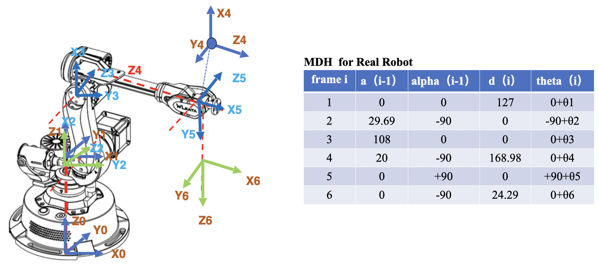
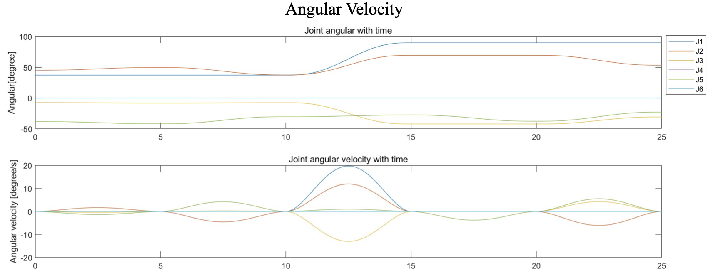
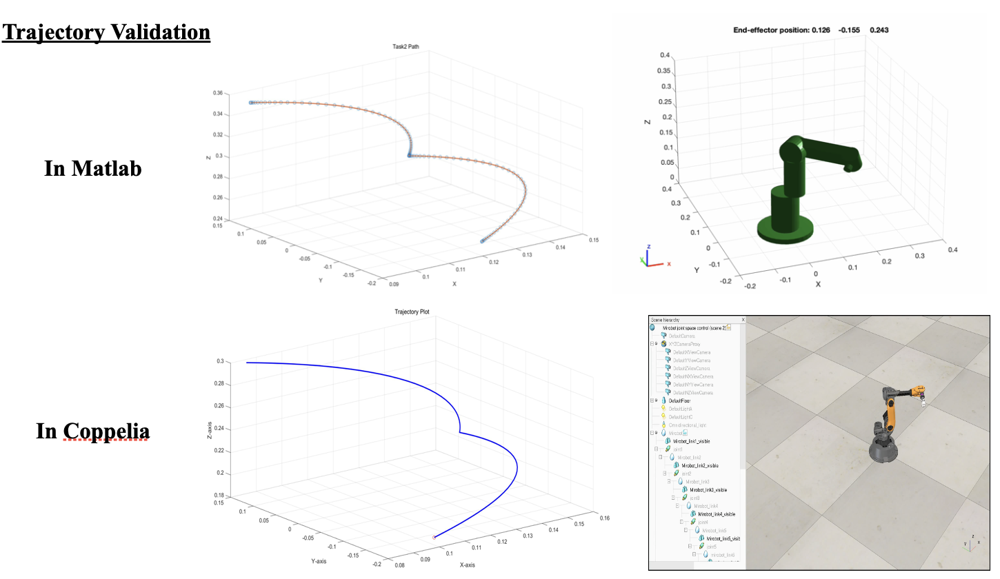
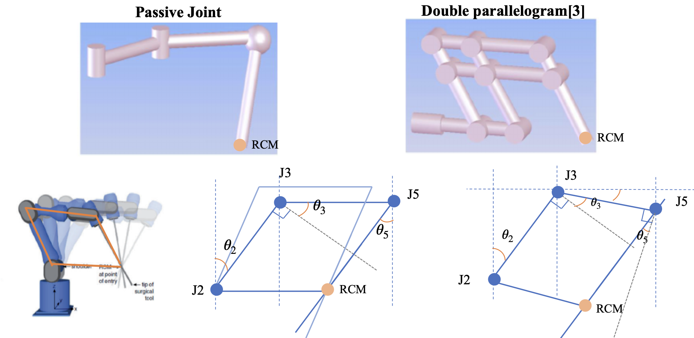
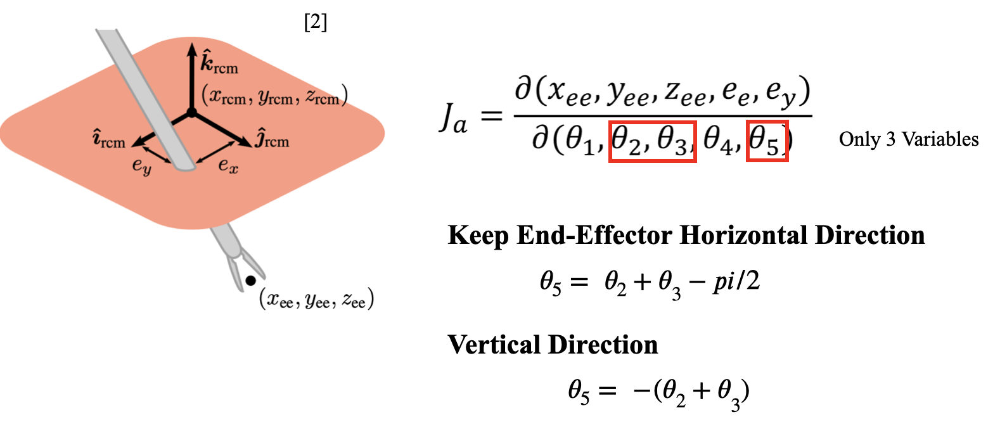

Robotic Arms | Trajectory Plan
Developed trajectory planning algorithms for a 6-DoF robotic arm, achieving 5 mm precision in minimally invasive surgery scenarios within confined spaces, validated through simulation and real-world demonstration
Project Introduction
This project involves robotic modelling based on a real 6-DOF robotic arm. The robotic arm’s path planning and control were simulated and validated using MATLAB and CoppeliaSim.
The final evaluation was based on real-world performance during the Live Demonstration, where the project successfully achieved an 80% grade.
Assessment - Live Demonstration
Task 1: Grab and Place
- Objective: Pick up a cube and accurately place it in a specified spot with a maximum error of 1mm.
- Challenge: The destination point exceeds the maximum reach of the robotic arm when using the tip tool.
Task 2: Minimally Invasive Surgery Challenge
- Goal: Control a pen as a surgical tool to reach four target points inside a box.
- Constraint: The tool must pass through a 0.5 cm hole while maintaining a maximum error of 5 mm.
Robot Modelling and MDH Table

Joint Space Control

Simulation

Minimally Invasive Surgery Challenge
Solution Design: remote center of motion (RCM)

